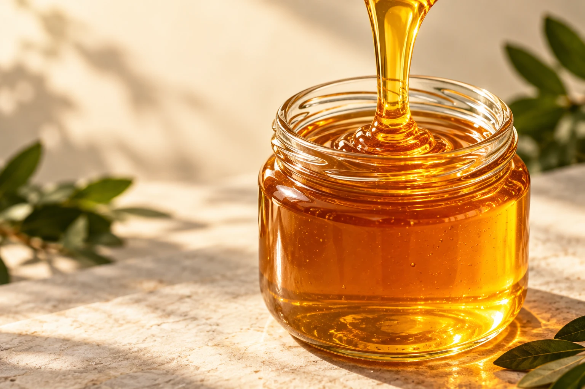
01 / HONEY INGREDIENTS
벌꿀 원료
Honey ingredients
다양한 밀원의 베트남 벌꿀.
제조와 비즈니스를 위한 원료 공급.
Vietnamese honey from diverse floral sources, for manufacturing and business needs.
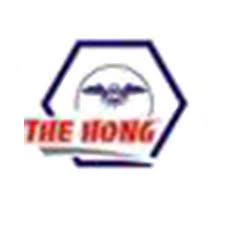
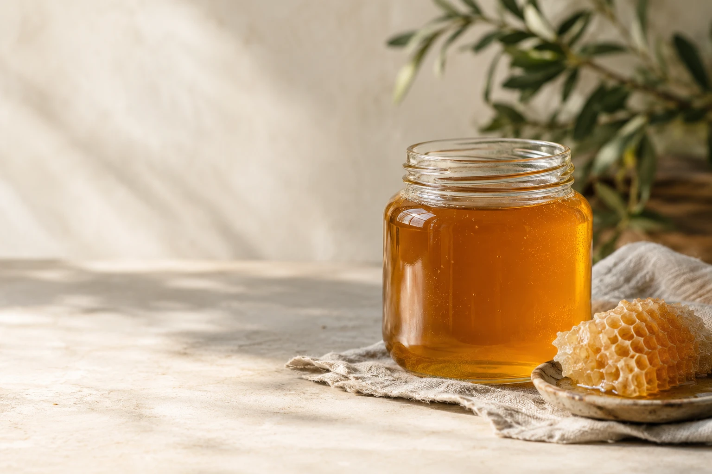
FROM VIETNAM, FOR YOUR BRAND
Vietnamese honey.
Made for your brand.
벌꿀 원료 · 벌집꿀 · OEM / 프라이빗 라벨
기업과 새로운 브랜드를 시작하는 당신에게,
생산 현장과 연결된 전문적인 파트너.
Bulk honey, honeycomb & private label.
A production partner for businesses and new founders.
THE PEOPLE BEHIND THE HONEY
From a beekeeper's hands
to the world.
양봉가로 시작한 창업자의 경험.
그 진심이 오늘의 Dak Nguyen Hong을 만들었습니다.
40년 넘게 벌과 꿀을 다뤄온 창업자의 현장 경험을 바탕으로, Dak Nguyen Hong은 베트남의 다양한 밀원과 폭넓은 양봉 네트워크를 연결해 왔습니다. 진정성과 전문성을 지키며 성장한 베트남 1위 벌꿀·밀랍 수출 기업입니다.
Founded by a beekeeper with more than 40 years in the trade, Dak Nguyen Hong brings together diverse floral sources and an extensive beekeeping network across Vietnam. Sincerity and professionalism have guided the company to become Vietnam's No.1 honey and beeswax exporter.
OUR PRODUCTS
Honey for your business.
A format for your vision.

Honey ingredients
다양한 밀원의 베트남 벌꿀.
제조와 비즈니스를 위한 원료 공급.
Vietnamese honey from diverse floral sources, for manufacturing and business needs.
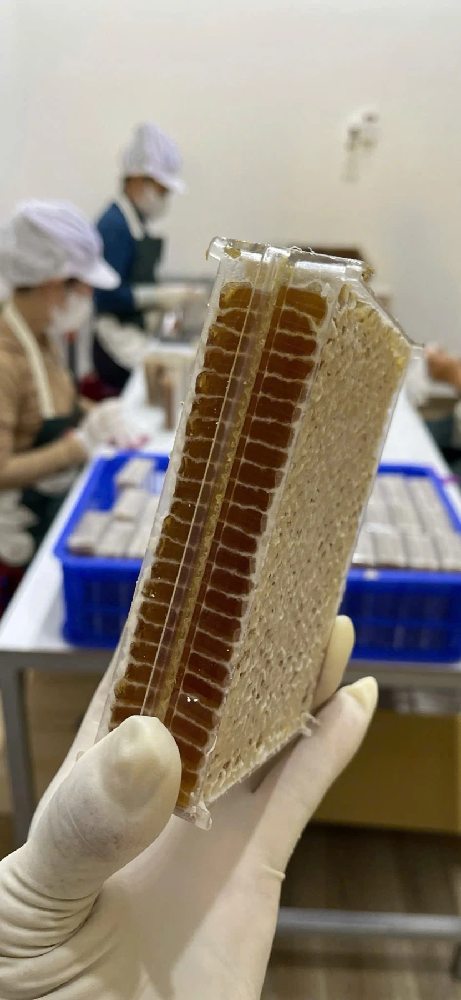
Honey, in the comb
벌집 고유의 형태와 식감.
꿀을 경험하는 또 하나의 방식.
The distinctive form and texture of honeycomb. Another way to experience honey.
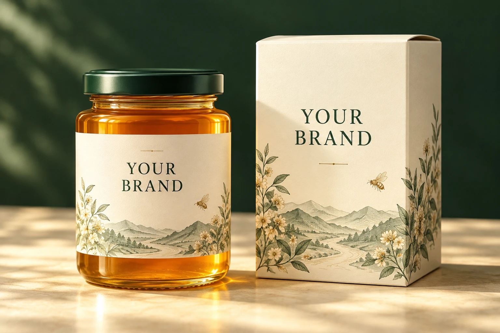
포장 콘셉트 · Packaging conceptYour own honey label
원료부터 제품과 포장 방향까지.
브랜드에 맞춘 OEM / PB 상담.
Discuss honey selection, product format and packaging for your own brand.
BEESWAX · FROM OUR FACILITY
Honey & beeswax.
One experienced partner.
밀랍 생산부터 보관과 출하까지.
실제 현장의 사진으로 보여드립니다.
Beeswax processing, storage and loading,
shown through photographs from our facility.
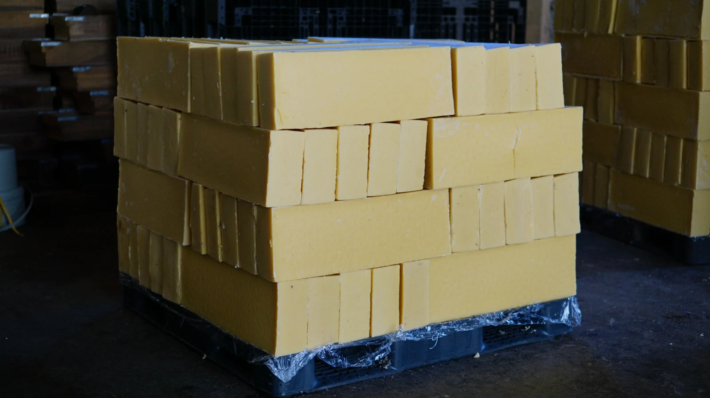
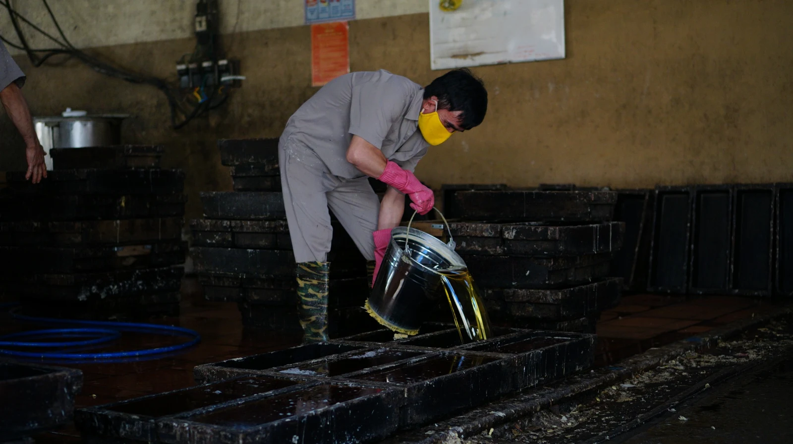
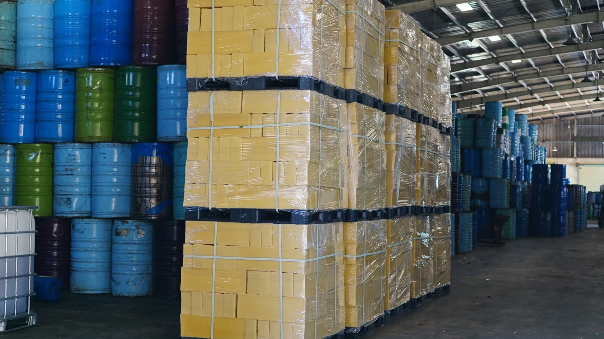
WHY DAK NGUYEN HONG
Beekeeping expertise
Micro-filtration
International quality standards
Professional, attentive support
FACTORY & PROCESSING
Confidence begins
at the source.
베트남의 벌꿀 생산 시설.
원료 보관과 마이크로 여과, 품질 관리까지,
현장을 통해 우리의 일을 보여드립니다.
Inside our honey facility in Vietnam: ingredient storage, micro-filtration and quality control.
생산 영상 보기 Watch production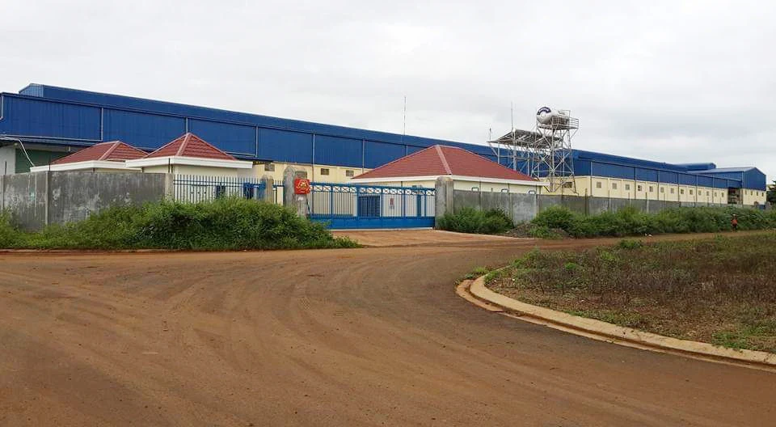
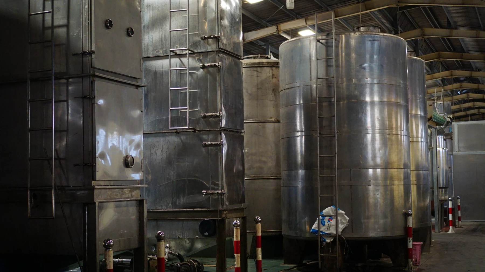
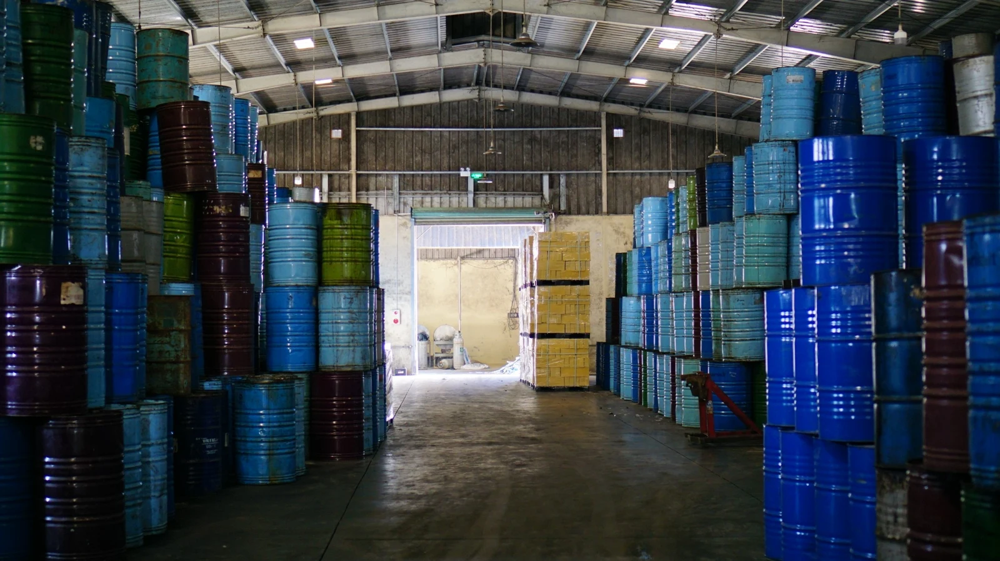
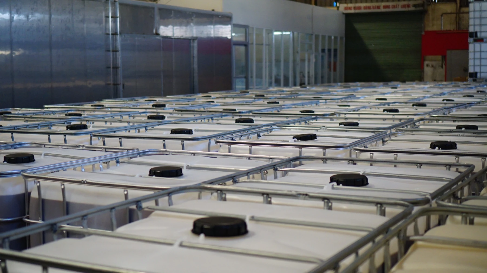
QUALITY, WITH PURPOSE
Quality for your market.
국제 기준에 맞춘 품질 관리.
필요한 규격부터 함께 확인합니다.
Quality control guided by international standards.
Let's start with the specifications your market needs.
생산 공정의 마이크로 여과 시스템.
Micro-filtration in honey processing.
목표 시장과 용도에 필요한 규격 및 자료를 상담합니다.
Discuss specifications and documentation for your market and application.
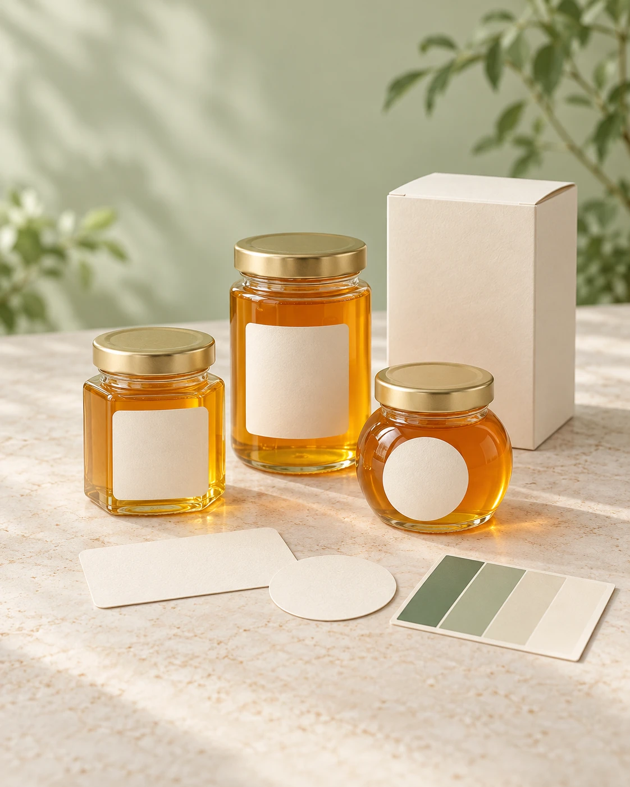
OEM / PRIVATE LABEL
Your idea.
Our honey expertise.
기업도, 처음 시작하는 개인도.
전문적이고 세심하게 함께합니다.
For businesses and first-time founders.
Professional support, with care.
판매 시장과 제품 아이디어를 들려주세요.
Share your market and product idea.
원료와 규격, 포장 방향을 함께 상담합니다.
Explore honey, specifications and packaging.
요청에 맞는 조건과 다음 단계를 확인합니다.
Discuss production terms and next steps.
A CLOSER LOOK
Real people. Real production.
EXPORT & SUPPLY
From Vietnam
to your business.
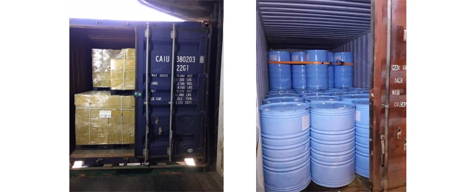
연간 공급 역량 · 톤/년
Annual supply capacity · tonnes/year
일본 · 미국 · 호주 · 유럽
Export markets: Japan · USA · Australia · Europe
벌꿀 · 밀랍 수출 상담
Honey & beeswax export enquiries
LET'S GROW TOGETHER
Good partnerships begin
with a conversation.
벌꿀 원료 · 벌집꿀 · 밀랍 · OEM / PB
필요한 내용을 편하게 이야기해 주세요.
Honey, honeycomb, beeswax or your own brand.
Tell us what you have in mind.
129 Lê Thị Hồng Gấm, phường Tân An,
tỉnh Đăk Lăk, Việt Nam
129 Le Thi Hong Gam, Tan An Ward,
Dak Lak Province, Vietnam
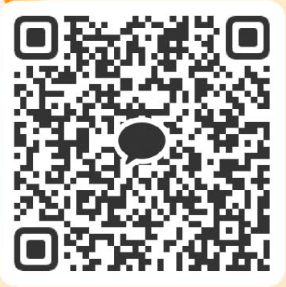
QR 코드를 스캔하거나 버튼을 눌러주세요.Scan the QR code or tap to connect.